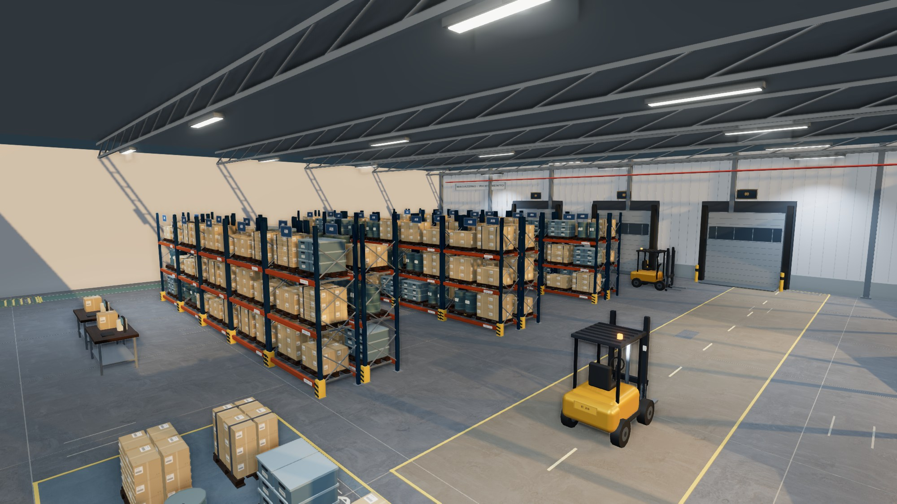
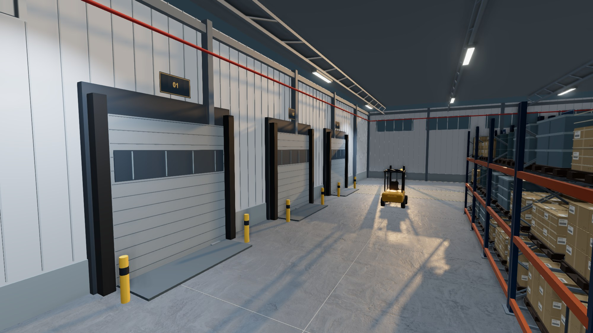
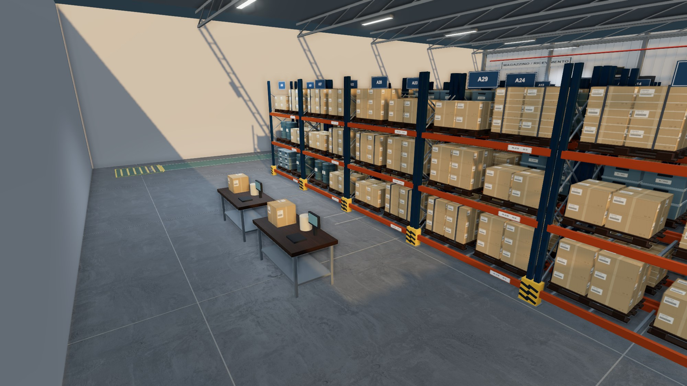

01↔
Organizza il layout.
Imposta le dimensioni del magazzino. Posiziona scaffalature, pallet e banchi, poi definisci corsie e aree operative.
Apri il progetto →
IL TUO LABORATORIO DI LOGISTICA, NEL BROWSER
Progetta il magazzino, organizza i percorsi.
Impara a leggere lo spazio di lavoro.
Nessun account necessario. Il tuo progetto resta su questo dispositivo.
Organizza con criterio.
Impara progettando.
UN PERCORSO CONCRETO
Parti dallo spazio e dalle attrezzature.
Verifica gli ingombri e motiva le tue scelte.
Imposta le dimensioni del magazzino. Posiziona scaffalature, pallet e banchi, poi definisci corsie e aree operative.
Apri il progetto →Esplora il 3D dalla panoramica e dalla vista interna. Confronta ingombri, percorsi e condizioni di illuminazione.
Esplora il magazzino →Individua elementi sovrapposti e passaggi occupati. Modifica le posizioni e controlla il risultato.
Prova l’esercizio →LO SPAZIO HA UNA FUNZIONE
Un pallet fuori posto cambia un passaggio. Una scaffalatura spostata cambia una corsia. Nel laboratorio puoi provare una disposizione e osservare le interferenze che produce.
IL CONTESTO DEL LABORATORIO
Dal ricevimento alla spedizione, ogni fase
richiede un’area e un’organizzazione coerenti.

01 / RICEVIMENTOBaie, aree di attesa e spazio per movimentare le merci: il punto di partenza per ragionare sui flussi.

02 / PREPARAZIONE ORDINIPostazioni, materiali e percorsi: osserva come il layout collega lo stoccaggio al lavoro al banco.
Tutte le immagini sono renderizzate dal magazzino di esempio disponibile nel laboratorio. Puoi esplorare lo stesso spazio, modificarne il layout e analizzarne le interferenze.
IL TUO SPAZIO DI LAVORO
Un progetto da esplorare.
Un problema concreto da risolvere.
Un layout completo con scaffalature, corsie e aree di spedizione. Parti da qui per sperimentare.
Apri l’esempio ↗Trova i pallet collocati male, modifica la posizione e verifica che i passaggi tornino liberi.
Apri l’esercitazione ↗Dall’editor puoi importare ed esportare un file progetto.
IMPARARE ATTRAVERSO LO SPAZIO
Warehouse Lab nasce per la didattica:
osserva, sperimenta e confronta le soluzioni.
Costruisci un layout, individua i problemi e spiega perché hai scelto una determinata disposizione.
Usa il magazzino come base per discutere percorsi, ingombri e organizzazione delle aree operative.
Esporta diverse configurazioni e riaprile per confrontare le proposte durante il lavoro di gruppo.
PRIMA DI ENTRARE
No. Gli elementi si aggiungono dal catalogo e si modificano con misure, posizione e rotazione nel pannello delle proprietà.
Nel browser su questo dispositivo. Esporta un file JSON dall’editor per conservarne una copia o trasferirlo. Il progetto personale, l’esempio e l’esercitazione hanno salvataggi distinti.
Ingombri fuori perimetro, sovrapposizioni e interferenze con percorsi e aree di uscita. Sono controlli geometrici didattici, non verifiche di portata o certificazioni di conformità normativa.
Sì. Sono rendering della scena 3D del laboratorio, con gli stessi modelli, materiali e luci dell’editor. Apri il magazzino di esempio per esplorare e modificare lo stesso ambiente.
IL PROSSIMO LAYOUT È IL TUO
Osserva. Progetta. Verifica.